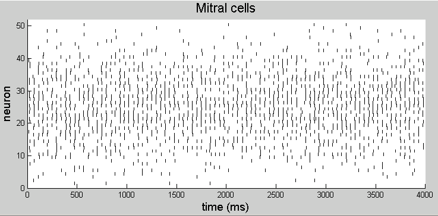

This is the readme for the model associated with the paper:
Licurgo de Almeida, Marco Idiart and Christiane Linster, 2013.
A model of cholinergic modulation in olfactory bulb and piriform cortex.
J Neurophysiol
All codes presented here were implemented using Matlab 2011a and might
not work in other similar programs (i.e. Octave or very old versions of
Matlab).
First you will need to add BulbModel and PiriformModel to the (matlab) path.
This can be done with the below commands at the matlab prompt once you
start where you expanded the archive:
cd BulbModel
dir1=pwd;
cd ../PiriformModel/
dir2=pwd;
addpath(dir1, dir2)
To create Mitral cell output using the integrate and fire model use
the following command (after cd'ing to the BulbModel folder),
[OSN,Pglo,Glo,Mitral,Granule,OSNsource,Grasource,param] = bulbmain('cholinmodON.txt',25,40);
where 'cholinmodON.txt' is the input file with the model parameters,
25 is the activation pattern and 40 is a reference number.
To create Mitral cell output using the simplified version of the model
(see main paper for reasoning about the differences) use the following
command:
[Mitral,param] = bulbsimple('AChOn',25,40);
where 'AChOn' is the prefix of the Mitral file, 25 is the activation
pattern and 40 is a reference number.
You can plot the activation of a group of cells with the command:
PlotRasterplot(Mitral,param);
which should display an image similar to paper Figure 2Bii like this:

After creating a pool of Mitral cells, one can use these neuronal
activities to feed the PC network with the following command (after
you have cd'd to the PiriformModel folder):
[Mitral,Feedforward,Pyramidal,Feedback,param] = piriformmain('AChOn2540.mat',false);
where 'AChOn2540.mat' is the file created by the OB network and the
flag false indicates that the program is going to create a new set of
connections between PC neurons.
We also added a couple of programs to measure levels sparseness,
average frequency and synchronization of the network (see main paper
for reasoning).